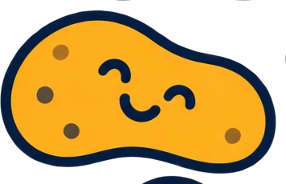
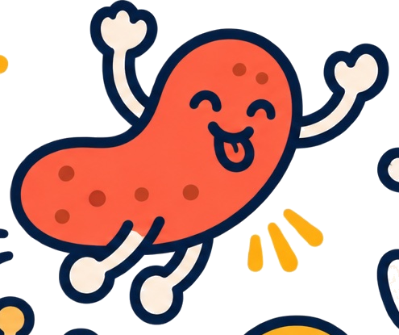
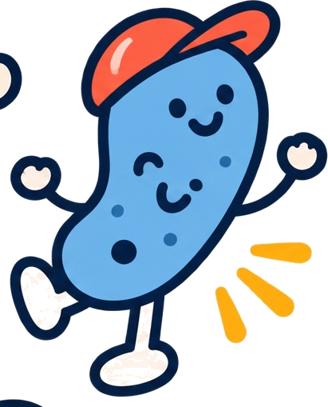
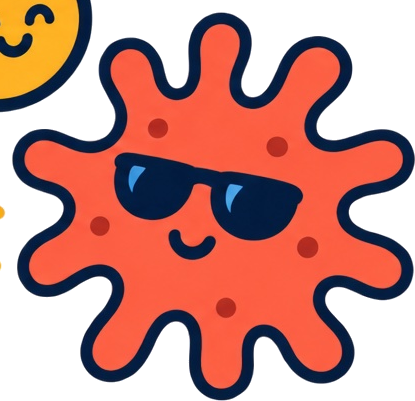
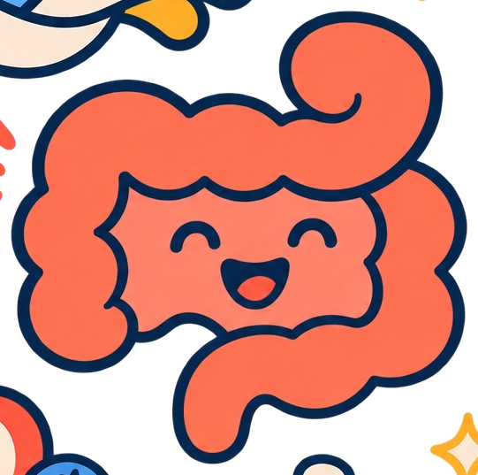
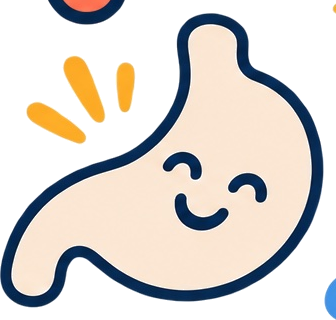
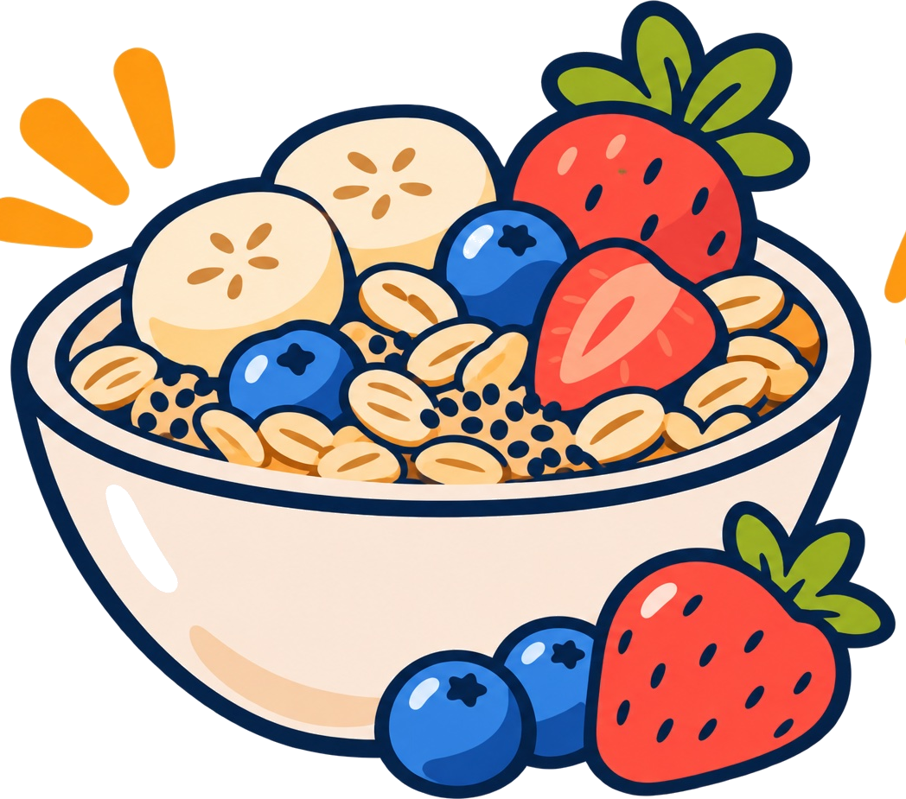
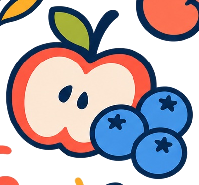
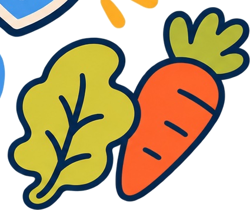

PROBIÓTICOS
Son microorganismos vivos que, en la cantidad adecuada, pueden aportar un beneficio a tu salud. ISAPP, 2014
O sea: bichitos buenos que llegan vivos y hacen su chamba si el contexto les ayuda.
Tip: fermento vivo ≠ automáticamente “probiótico”; eso pide evidencia. ISAPP, 2021
En fermentos vivos como el kéfir y la kombucha de The Good Co.
Cremoso o burbujeante: dos personalidades, misma vibra de cultivo vivo.


La ciencia no promete milagros de Instagram, pero sí hay hallazgos serios:

Digestión Apoyan una digestión más amable. El kéfir destaca en ensayos GI. King’s College, 2019
Equilibrio Dieta rica en fermentados ↑ diversidad del microbioma. Stanford / Cell, 2021Kéfir · el cremoso
Uno de los fermentos con más ensayos clínicos. Indicios favorables para digerir lactosa y marcadores metabólicos en meta-análisis de RCTs. Dimidi 2019 · Meta-análisis 2021
Kombucha · la burbujeante
También sumó en dietas fermentadas. Hay indicios en síntomas digestivos; la evidencia humana aún es más chiquita que la del kéfir. Revisión 2025 · ISAPP 2021

Combina tus fermentos con fibra de plantas (prebióticos): “comida” para tus bichitos. ISAPP, 2017 Eso se acerca a un sinbiótico. ISAPP, 2020

No es moda: más fermentados se asociaron con más diversidad intestinal y menos señales inflamatorias. Empieza poquito, guárdalos en frío y elige lo rico. Info educativa; no sustituye consejo médico.
